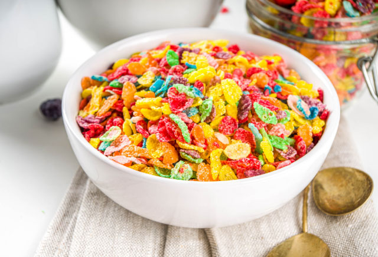

|

|
Un informe de la revista Lancent encontró que ciertos factores en el estilo de vida podrían retrasar o prevenir un tercio de los casos de demencia en todo el mundo. Entre ellos se incluyó la alimentación, destacando que una dieta rica en verduras de hoja verde, cereales integrales, pescado y aves ayudaba a reducir las probabilidades de deterioro cognitivo.
Según las doctoras Christine Bishara y Amber O'Brien, estos alimentos pueden potenciar el riesgo de tener Alzheimer:
Cereales azucarados: Contribuyen a empeorar la flora intestinal, factor que se ha vinculado con el Alzheimer. Según Bishara existe cierta relación entre el estómago y el cerebro que puede conducir al desarrollo de la enfermedad de Alzheimer. "La disminución de la diversidad intestinal y el aumento de la inflamación, creemos que tienen vínculos importantes con el desarrollo de la demencia de Alzheimer", afirma.
La bollería industrial rica en azúcares añadidos: Potencia el riesgo de demencia. Los alimentos ultraprocesados, y en concreto la cantidad de azúcares añadidos que conllevan, son uno de los alimentos que más pude poner en peligro la salud cerebrovascular.
Refrescos light: Tienen el mismo impacto en el cerebro que las versiones azucaradas. "Los refrescos dietéticos con todos sus edulcorantes artificiales también alteran el intestino y disminuyen su diversidad", reconoce Bishara. "La única excepción es la stevia, que es un edulcorante natural, pero aun así lo limitaría ya que no conocemos los efectos a largo plazo y los estudios sobre ella".
|